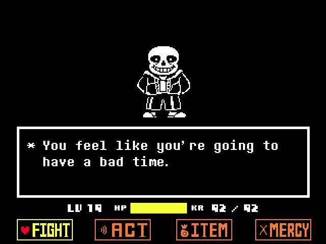

Hello, welcome to my site!
Where we will be going over some of the music of Undertale & Deltarune
This Site will contain spoilers, but I will do my best to not spoil the game.
The music from these games tends to have in-depth themes, leitmotifs, connections, among other things. The thing about the music from the game is that it references the other music in the games and the reason why and how it connects. Usually, it's through leitmotifs and how and when it appears it signifies a place or character in the story, a connection with other characters, how it can refer to something else, or the fanbase reaction to it. Toby Fox is a very talented and skilled musician, as he has made music for some Nintendo Games. As it can be seen through his work. For example, "The Third Sanctuary", which will be discussed on a different page.
MEGALOVANIA
You can't talk about Toby Fox's music without mentioning MEGALOVANIA.
This is the 100th track of the Undertale soundtrack, it has a BPM of 240, the key it is in is D minor with a time signature of 4/4. This track does not contain a leitmotif.

This track is what is considered to be one of the most recognizable tracks out of all of the Undertale Soundtrack. Due to its popularity, it became a meme song. There are many iterations of it, with some of it being various different remixes and mash-ups of the track, where someone would play the first few seconds of the intro on a piano if there was a piano in a video game, and even playing it on the most random of things, like a doorbell or a calculator. It's gotten to the point where Toby Fox acknowledges it by in Deltarune chapter 4 if you play MEGALOVANIA on the Organ it will result in the Annoying Dog (The character that represents Toby Fox) running over the character with a toy car. Then if you try to do it again one of the notes would be in the wrong key. [EVIDENCE]
Reference
- MEGALOVANIA.” Undertale Wiki, undertale.fandom.com/wiki/MEGALOVANIA. Accessed 14 Apr. 2026.